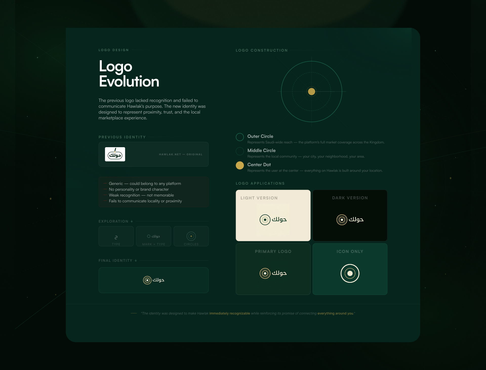
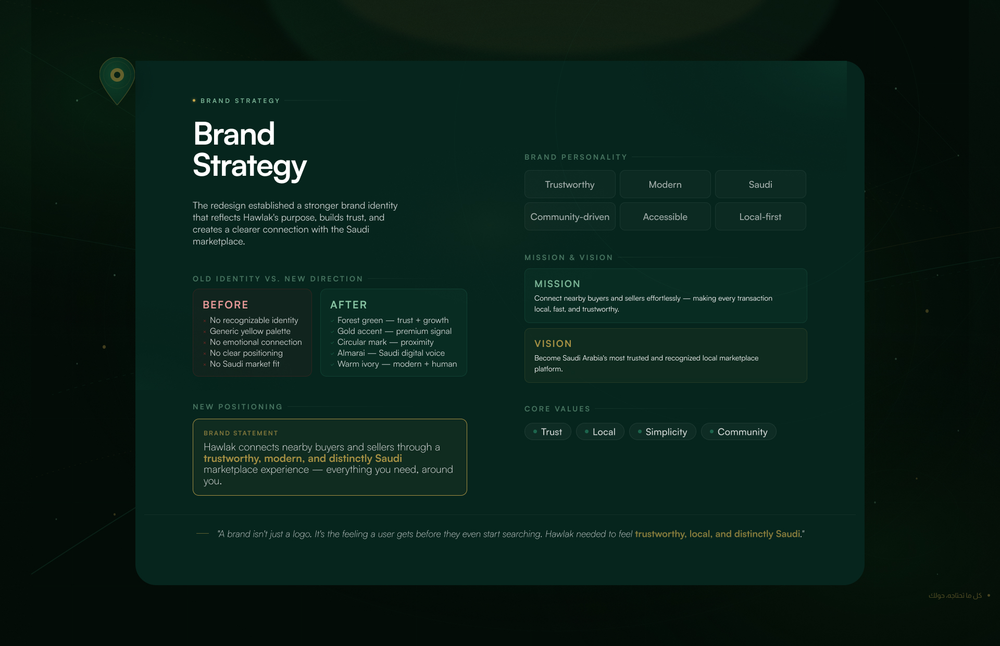
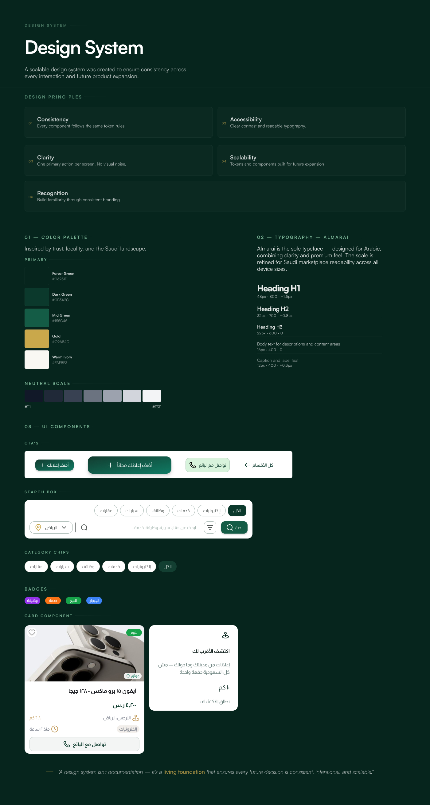

Hawlak · UX Audit · Product Strategy · Brand & UI Redesign
I wasn't redesigning a marketplace. I was figuring out why it felt unclear.
Hawlak had the pieces of a marketplace. The challenge was making those pieces feel like one clear product.

The original hawlak homepage
01 — UX Audit
Before touching the UI, I looked for friction.
I audited the existing experience to understand where the interface was making simple tasks harder than they needed to be.

01
Search wasn't the hero
The main search action was competing with a large promotional banner.
02
The product wasn't immediately clear
The first screen didn't clearly communicate what Hawlak was primarily helping people do.
03
The journeys were blurred
Searching for something and posting something were competing for the same attention.
Everything was asking for attention. Nothing was clearly asking for it first.
02 — Product direction
So I asked a simpler question.
“What should Hawlak help me do first?”
I'm looking for something
Search → Discover → Contact
I want to offer something
Post → Describe → Connect
Two intentions. Two clear paths.
03 — UX decision
Search first. Post second.
The homepage shouldn't make two primary jobs compete. So I gave each one a clearer place in the experience.
Before
Search competes with the homepage.
After
Search becomes the first thing you can act on.
04 — Homepage redesign
Once the first step was clear, everything else had a job.
01 — Start here
Search is immediately available.
02 — Discover
Categories make browsing easier to understand.
03 — Understand
Listings have a clearer visual hierarchy.
04 — Post
Sellers get a distinct path instead of competing with search.
The goal wasn't to add more content. It was to give each piece a reason to exist.
05 — Brand direction
A clearer product needed a clearer identity.
The original identity felt generic and didn't communicate Hawlak's local marketplace idea clearly enough.
The idea
Put the user at the center.
Outer circle
The wider marketplace.
Middle circle
The local community.
Center dot
The user at the heart of the experience.


A small visual idea became the foundation for the identity.
06 — Design system
The visual language had to survive beyond one screen.
I translated the new direction into a system of reusable decisions across the product.
Clarity
One clear primary action.
Recognition
A consistent visual identity.
Consistency
Shared components and patterns.
Scalability
A foundation for future product expansion.

07 — Design decisions
Every screen started with a problem.
Search
Search was competing with other content.
Make search the primary action above the fold.
Positioning
The product's purpose wasn't immediately clear.
Build a stronger marketplace-focused first impression.
Categories
Categories lacked hierarchy and browsing structure.
Introduce clearer, intent-driven navigation.
User journeys
Searching and posting competed for attention.
Separate the two primary journeys.
Trust
The interface lacked strong trust signals.
Use clearer hierarchy, branding, and marketplace cues.
Local discovery
Hawlak's local value wasn't visible enough.
Make nearby discovery part of the experience.
08 — Before / after
Same marketplace. Different first impression.
Before
Search was buried.
The product's purpose was unclear.
The hierarchy competed for attention.
After
Search comes first.
The journeys are clearer.
The identity feels intentional.
I didn't try to make Hawlak look better. I tried to make it easier to understand.